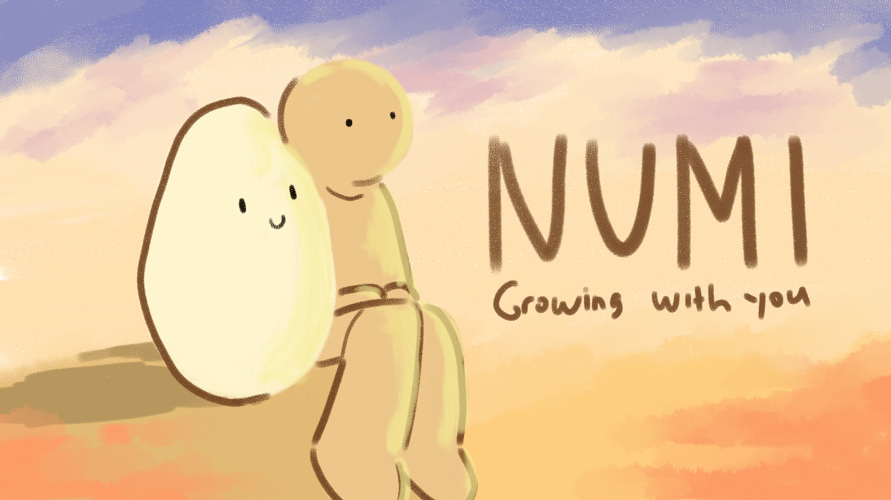
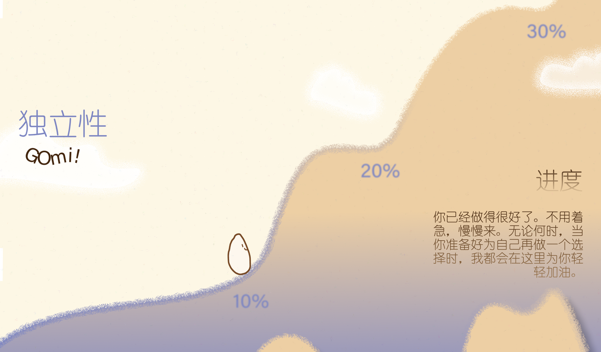

将心理学练习转化为互动式日常仪式的数字心理健康平台。

NUMI 是一个数字心理健康平台，用户通过照料一颗象征情绪成长的“米粒”， 将心理疗愈过程转化为可视化的互动体验。
项目尝试将心理学机制转译为日常行为仪式， 通过界面设计构建情绪反馈与成长感知。
项目基于 Figma 完成，从信息结构、线框图到高保真原型逐步构建。
在设计过程中，我们持续优化交互逻辑与视觉语言， 以确保系统在不同设备上的一致性与可用性。
同时对视觉风格进行了统一，使整体体验更具沉浸感与情绪引导性。

最终设计显著提升了设计迭代效率，并减少约30%的重复修改时间。